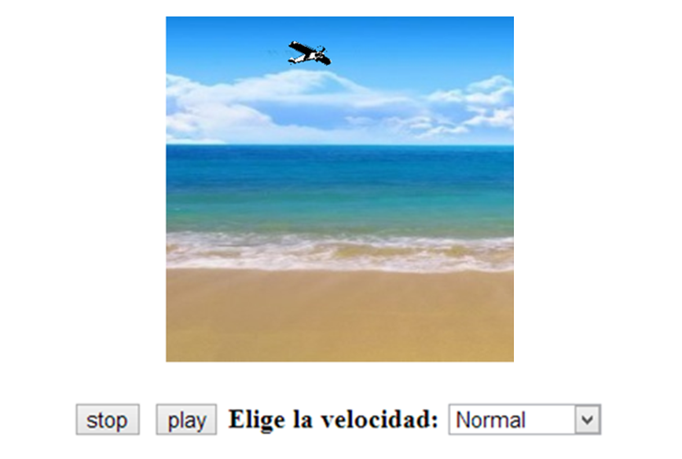

Siguiendo el ejemplo desarrollado durante el temario, en el que montábamos dos imágenes para que pareciese que se estaba moviendo un avión Deberás implementar mediante JavaScript, las funcionalidades de arrancar, parar y seleccionar una velocidad de movimiento.
